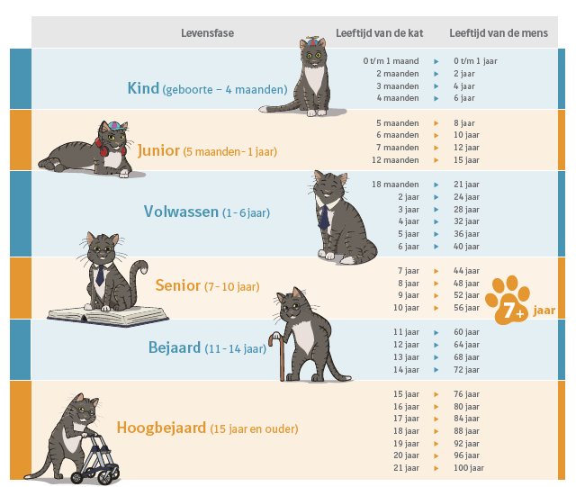

Condities en logica¶
Het is mogelijk om een programma te schrijven dat altijd hetzelfde doet, ongeacht de invoer. Dit is echter meestal niet wenselijk. Wat een programma doet hangt vaak af van de invoer. Met condities en conditionele statements kan een programma beslissingen nemen en code onder bepaalde voorwaarden uitvoeren.
Relationele operatoren¶
Java heeft zes relationele operatoren.
Relationele operatoren zijn operatoren die de relatie tussen twee waardes checken, en teruggeven of deze relatie van toepassing is of niet.
Relationele operator |
Voorwaarde |
|---|---|
|
|
|
|
|
|
|
|
|
|
|
|
Het resultaat is van het type boolean. De relatie is van toepassing (waar, true) of niet van toepassing (niet waar, false).
De relationele operator kan alleen gebruikt worden met variabelen van types die compatible aan elkaar zijn. Dat wil zeggen: vergelijkbaar.
Zo is een int wel te vergelijken met een double (beide getallen), maar niet met een String of boolean (te verschillend om met elkaar te kunnen vergelijken).
Let op!
Een is gelijk aan relatie wordt aangegeven met een dubbel
=-teken. Een enkel=-teken zal niet werken.Vuistregel: Meestel geldt dat de relationele operatoren gebruikt worden met primitieve types.
Gebruik relationele operatoren niet voor het vergelijken van strings. Het vergelijken van strings vindt op een andere manier plaats.
If-statement¶
Een if-statement kan gebruikt worden om code alleen onder een bepaalde voorwaarde uit te voeren.
De voorwaarde wordt omschreven met een relationele operator.
if (<relationele operator>) {
// code die wordt uigevoerd als de relationele operator 'waar' is
}
Voorbeeld:
int x = 2;
if (x>0) {
System.out.println("De waarde van x is een positief getal.");
}
De waarde van x is een positief getal.
Else-keyword¶
In sommige gevallen is het de bedoeling dat een (ander) blok code wordt uitgevoerd als de relationele operator niet ‘waar’ is.
Dit is te realiseren met twee afzonderlijke if-statements.
Voorbeeld:
int x = 5;
if (x==5) {
System.out.println("De waarde van x is 5.");
}
if (x!=5) {
System.out.println("De waarde van x is NIET 5.");
}
De waarde van x is 5.
Dit is omslachtig, omdat er een tweede if-statement moet worden geschreven, met een relationele operator die tegengesteld is aan die van het eerste if-statement.
Een eenvoudiger wijze om dit te bereiken is gebruik van het else-keyword:
if (<relationele operator>) {
// code die wordt uigevoerd als de relationele operator 'waar' is
} else {
// code die wordt uigevoerd als de relationele operator NIET 'waar' is
}
Het keyword else wordt altijd gebruikt als onderdeel van een if-statement. Zelfstandige else-statements bestaan niet. Een if..else-statement bevat twee blokken code, die één van beide wordt uitgevoerd.
Voorbeeld:
int x = 5;
if (x==5) {
System.out.println("De waarde van x is 5.");
} else {
System.out.println("De waarde van x is NIET 5.");
}
De waarde van x is 5.
Nesting en chaining¶
Soms is het nodig dat er meer dan twee verschillende stukken code zijn, die afhankelijk van voorwaarden worden uitgevoerd.
Voorbeeld: Een conditie die afhankelijk van de waarde van x op het scherm print of deze 0 is, positief (>0) of negatief (<0).
int x=5;
if (x==0) {
System.out.println("De waarde van x is 0.");
}
if (x>0) {
System.out.println("De waarde van x is een positief getal.");
}
if (x<0) {
System.out.println("De waarde van x is een negatief getal.");
}
De waarde van x is een positief getal.
Dit kan korter en gemakkelijker door middel van een else-statement.
Omdat er sprake is van drie mogelijkheden, zouden twee if-else statements gebruikt kunnen worden:
if (x==0) {
System.out.println("De waarde van x is 0.");
} else {}
if (x>0) {
System.out.println("De waarde van x is een positief getal.");
} else {
System.out.println("De waarde van x is een negatief getal.");
}
De waarde van x is een positief getal.
Bij de bovenstaande aanpak wordt eerst gekeken of x gelijk is aan 0. Zo niet (else), dan wordt vastgesteld of x positief of negatief is x.
Het plaatsen van een nieuw if-statement binnen een code-blok van een ander if-statement is een vorm van nesting.
In deze situatie kan in plaats van nesting ook chaining worden gebruikt:
int x=-1;
if (x==0) {
System.out.println("De waarde van x is 0.");
} else if (x>0) {
System.out.println("De waarde van x is een positief getal.");
} else {
System.out.println("De waarde van x is een negatief getal.");
}
De waarde van x is een negatief getal.
Met chaining wordt een ketting gemaakt van opvolgende if-statements. Deze kan in theorie onbeperkt lang worden.
In veel situaties zijn meerdere oplossingen mogelijk.
Naast de keuze tussen chaining en nesting kan ook de volgorde veranderd worden:
int x=-1;
if (x<0) {
System.out.println("De waarde van x is een negatief getal.");
} else if (x>0) {
System.out.println("De waarde van x is een positief getal.");
} else {
System.out.println("De waarde van x is 0.");
}
De waarde van x is een negatief getal.
De bovenstaande drie voorbeelden zijn gelijkwaardig. Afhankelijk van leesbaarheid, efficiëntie en persoonlijke voorkeur wordt een werkwijze gekozen. Vaak zijn meerdere mogelijke werkwijzen juist.
Switch-statement¶
Het switch-statement is een constructie om een reeks vergelijkbare chained if-statements te vervangen met de relationele operator ==.
Voorbeeld:
int x=1;
System.out.print("The value of x is ");
if (x==1) {
System.out.println("one");
} else if (x==2) {
System.out.println("two");
} else if (x==3) {
System.out.println("three");
} else if (x==4) {
System.out.println("four");
} else {
System.out.println("an unknown number");
}
The value of x is
one
Bovenstaande if-statements kunnen vervangen worden door deze switch-constructie:
int x=11;
System.out.print("The value of x is ");
switch (x) {
case 1:
System.out.println("one");
break;
case 2:
System.out.println("two");
break;
case 3:
System.out.println("three");
break;
case 4:
System.out.println("four");
break;
default:
System.out.println("an unknown number");
}
The value of x is
an unknown number
In de switch-constructie worden vier verschillende keywords gebruikt:
switch Het keyword switch is het begin van een switch-block. Tussen haakjes staat de variabele waarvan de waarde wordt geëvalueerd.
case Het keyword case wordt gebruikt om om aan te geven in geval van welke waarde de code direct na de case wordt uitgevoerd. Voor case worden geen accolades gebruikt!
break Het keyword break wordt gebruikt om aan te geven dat uitvoer van code binnen het switch-block moet stoppen. Zonder break wordt ook code onder de volgende case-statements uitgevoerd. In de meeste gevallen is het wenselijk om break te gebruiken aan het einde van code bij een case.
default Het keyword default wordt gebruikt om aan te geven dat bij een waarde waarop géén van de case-statements van toepassing is de code direct na default wordt uitgevoerd. Een default-statement is niet verplicht.
Logische operatoren¶
Naast de relationele operatoren, heeft Java drie logische operatoren.
Java heeft zes relationele operatoren.
Logische operator |
Betekenis |
Voorwaarde |
|---|---|---|
|
en |
als beide kanten true zijn, dan is de uitkomst true |
|
of |
als beide kanten false zijn, dan is de uitkomst false |
|
niet |
uitkomst is inverse |
&&-operator¶
De &&-operator kan gebruikt worden voor if-statements met meerdere condities die allemaal waar moeten zijn.
Voorbeeld:
int x=0;
int y=0;
if (x==0) {
if (y==0) {
System.out.println("x en y zijn beide 0.");
}
}
x en y zijn beide 0.
De twee if-statements, kunnen vervangen door één if-statement met &&-operator:
int x=0;
int y=0;
if (x==0 && y==0) {
System.out.println("x en y zijn beide 0.");
}
x en y zijn beide 0.
||-operator¶
De ||-operator kan gebruikt worden voor if-statements met meerdere condities waarvan tenminste één waar moet zijn.
Voorbeeld:
int x=1;
int y=0;
if (x==0) {
System.out.println("Tenminste één van beide variabelen is 0.");
} else if (y==0) {
System.out.println("Tenminste één van beide variabelen is 0.");
}
Tenminste één van beide variabelen is 0.
Duidelijk nadeel van deze aanpak is duplicate code.
De twee if-statements, kunnen vervangen worden door één if-statement met ||-operator:
int x=1;
int y=0;
if (x==0 || y==0) {
System.out.println("Tenminste één van beide variabelen is 0.");
}
Tenminste één van beide variabelen is 0.
!-operator¶
De !-operator inverteert een conditie.
Inverteren betekent in dit geval: true wordt false en false wordt *true.
Voorbeeld:
int x=0;
if (!(x<5)) {
System.out.println("x is niet kleiner dan 5");
}
De relationele operator moet tussen haakjes staan om te voorkomen dat de !-operator op x toegepast wo
If-statements met de !-operator kunnen herschreven worden naar if-statements zonder !-operator.
if (!(x<5))
kan ook geschreven worden als
if (x>=5)
De wetten van De Morgan¶
Soms is een expressie nodig bestaande uit een mix van relationele en logische operatoren.
Bijvoorbeeld een if-statement om te controleren of x en y géén van beide 0 zijn:
int x=1;
int y=2;
if (!(x==0 || y==0)) {
System.out.println("x en y zijn allebei niet 0.");
}
x en y zijn allebei niet 0.
Nadeel van dit if-statement is de beperkte leesbaarheid door het gebruik van haakjes.
Doordat de !-operator voorrang krijgt op zowel de || als && operator zijn extra haakjes nodig.
Het if-statement kan herschreven worden met behulp van de wetten van De Morgan:
!(A && B)is hetzelfde als!A || !B!(A || B)is hetzelfde als!A && !B
Het voorbeeld kan met de wetten van De Morgan als volgt herschreven worden:
int x=1;
int y=2;
if (!(x==0) && !(y==0)) {
System.out.println("x en y zijn allebei niet 0.");
}
x en y zijn allebei niet 0.
In dit geval is gebruik van de !-operator onnodig complex. De inverse (tegengestelde) van gelijk aan 0 is ongelijk aan 0. De ongelijkheid-operator != toepassen maakt het if-statement beter leesbaar:
int x=1;
int y=2;
if (x!=0 && y!=0) {
System.out.println("x en y zijn allebei niet 0.");
}
x en y zijn allebei niet 0.
Boolean type¶
Relationele en logische operatoren geven true of false terug. Daarom kunnen ze ook in booleans opgeslagen worden.
Voorbeeld:
int x=5;
int y=7;
boolean x_smaller_than_y = x<y;
System.out.println(x_smaller_than_y);
true
Booleans kunnen ook in if-statements worden gebruikt.
Voorbeeld:
boolean light = true;
if (light) {
System.out.println("Het licht is aan");
} else {
System.out.println("Het licht is uit");
}
Het licht is aan
De statements
if (light) {
en
if (light==true) {
zijn gelijkwaardig.
Dit geldt ook voor de statements
if (!light) {
en
if (light==false) {
Invoer valideren¶
Een mogelijke toepassing van if-statements is het valideren van invoer. Valideren is controleren of invoer wel geldig is.
Voorbeeld: Leeftijd kat in mensenjaren¶
De gebruiker voert de leeftijd van een kat in, in jaren. Vervolgens print het programma de leeftijd van de kat in mensenjaren.
Als eerste is code nodig om de leeftijd van de kat om te rekenen naar een vergelijkbaar aantal mensenjaren.
Voor de omrekening wordt dit model gebruikt: 
Omwille van eenvoud wordt gewerkt met gehele aantallen jaren.
Het is wenselijk om dit in een afzonderlijke methode te doen, zodat de logica wordt gescheiden van de interactie met de gebruiker.
public static int leeftijdKatNaarMens(int aantaljaren) {
if (aantaljaren==1) {
return 15;
}
if (aantaljaren>1) {
return 16+aantaljaren*4;
}
return 0;
}
Ook de methode voor het omrekenen bevat een aantal if-statements omdat niet alle mogelijke kattenjaren met één wiskundige formule zijn om te rekenen naar mensenjaren.
// Testen
System.out.println(leeftijdKatNaarMens(10));
56
Vervolgens kan de interactie met de gebruiker geprogrammeerd worden:
System.out.println("Wat is de leeftijd van de kat, in mensenjaren?");
System.out.println();
System.out.print("Leeftijd van de kat (in jaren) ?");
Scanner s = new Scanner(System.in);
int leeftijdkat=s.nextInt();
int leeftijdkat_mensenjaren=leeftijdKatNaarMens(leeftijdkat);
System.out.println("De leeftijd van de kat in mensenjaren is "+leeftijdkat_mensenjaren+" jaar.");
Wat is de leeftijd van de kat, in mensenjaren?
Leeftijd van de kat (in jaren) ?
---------------------------------------------------------------------------
java.util.NoSuchElementException: null
at java.base/java.util.Scanner.throwFor(Scanner.java:937)
at java.base/java.util.Scanner.next(Scanner.java:1594)
at java.base/java.util.Scanner.nextInt(Scanner.java:2258)
at java.base/java.util.Scanner.nextInt(Scanner.java:2212)
at .(#47:1)
Hoewel bovenstaand programma goed werkt, is het mogelijk dat de gebruiker een ongeldige leeftijd invoert. Bijvoorbeeld een negatieve leeftijd. Of een leeftijd die onwaarschijnlijk hoog is.
Validatie zorgt er voor dat de gebruiker gewaarschuwd wordt bij ongeldige invoer.
System.out.println("Wat is de leeftijd van de kat, in mensenjaren?");
System.out.println();
System.out.print("Leeftijd van de kat (in jaren) ?");
Scanner s = new Scanner(System.in);
int leeftijdkat=s.nextInt();
if (leeftijdkat<0) {
System.out.println("Leeftijd kat negatief. Moet de kat nog geboren worden?");
} else if (leeftijdkat>45) {
System.out.println("De ingevoerde leeftijd klopt waarschijnlijk niet. De oudste kat ooit is 38 jaar geworden..");
} else {
int leeftijdkat_mensenjaren=leeftijdKatNaarMens(leeftijdkat);
System.out.println("De leeftijd van de kat in mensenjaren is "+leeftijdkat_mensenjaren+" jaar.");
}
Wat is de leeftijd van de kat, in mensenjaren?
Leeftijd van de kat (in jaren) ?-1
Leeftijd kat negatief. Moet de kat nog geboren worden?